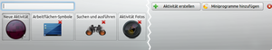
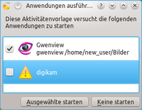

Aktivitäten
Dieser Artikel wurde für die folgenden Ubuntu-Versionen getestet:
Ubuntu 14.04 Trusty Tahr
Häufig nutzt man den Computer für verschiedene Aufgaben, die nichts miteinander zu tun haben. Plasma erlaubt es diese Aufgaben in verschiedene Aktivitäten zu unterteilen. So kann zum Beispiel ein Schüler unterschiedliche Aktivitäten für verschiedene Schulfächer nutzen, oder der nächste Urlaub lässt sich in einer eigenen Aktivität planen. Wird eine Aktivität gestartet, werden die zugehörigen Programme automatisch geöffnet, die entsprechenden Dokumente darin geöffnet oder Dokumentpfade eingestellt.
Was ist eine Aktivität¶
Technisch ist eine Aktivität eine Art Container, der all das beinhaltet, was mit der Aktivät zu tun hat. Für den Nutzer erscheint eine Aktivität fast wie eine eigene KDE-Sitzung. Verschiedene Aktivitäten können nicht nur anders aussehen (Miniprogramme), sondern auch unterschiedliche oder auch die gleichen Programme mit unterschiedlichen Inhalten geöffnet haben.
Aktivitäten nutzen¶
|  |
| Aktivitäten einrichten |
Die zentrale Verwaltung von Aktivitäten erfolgt in der Aktivitätsverwaltung, die über " auf die Plasma Arbeitsfläche -> Aktivitäten" oder
Windows +
Q aufgerufen wird. Alle Aktivitäten werden hier mit Namen, Bild und mehreren Knöpfe aufgelistet:
auf die Plasma Arbeitsfläche -> Aktivitäten" oder
Windows +
Q aufgerufen wird. Alle Aktivitäten werden hier mit Namen, Bild und mehreren Knöpfe aufgelistet:
: startet die Aktivität
: Konfiguration von Namen oder Bild der Aktivität
: löscht die Aktivität
Letztgenannter Knopf ändert sich nach dem Start einer Aktivität in mit dem man eine Aktivität stoppen kann. Ein Klick auf das Symbol einer Aktivität wechselt zu dieser.
Aktivität erstellen¶
Eine neue Aktivität wird über "Aktivität erstellen" in der Aktivitätsverwaltung erstellt. Hier hat man die Wahl
|  |
| Voreingestellte Anwendungen |
eine Vorlage zu nutzen. Sie stellen Programme und Ansichten für vordefinierte Aktivitäten bereit. Werden die Vorlagen benutzt, so erscheint die Abfrage "Anwendungen ausführen", in der man die voreingestellten Programme auswählen kann, die in dieser Aktivität gestartet werden. Bei manchen Vorlagen ist dieser Dialog leer. In nebenstehendem Bild ist Digikam nicht installiert. Natürlich lassen sich weitere Programme auch nachträglich hinzufügen. Zusätzliche Vorlagen können mit dem Paket plasma-containments-addons oder über "Aktivität erstellen -> Vorlage -> Neue Vorlagen herunterladen" installiert werden.
über "Leere Arbeitsfläche" eine unkonfigurierte Aktivität zu erstellen.
die aktuelle Aktivität zu kopieren.
Nach dem Erstellen befindet man sich direkt in der neuen Aktivität.
Aktivitäten wechseln¶
Um nicht immer erst die Aktivitätsverwaltung öffnen zu müssen, gibt es noch einige andere Möglichkeiten um zwischen Aktivitäten zu wechseln:
Analog zum Wechsel zwischen Anwendungen kann man über die Windows + Tab ⇆ , durch bereits gestartete Aktivitäten wechseln.
Das Miniprogramm "Aktivitätsleiste" funktioniert wie eine Fensterleiste und listet alle laufenden Aktivitäten. Da es sehr breit ist, bietet es sich an, eine neue Kontrollleiste einzurichten, die sich automatisch ausblendet. Darin platziert man nun das Miniprogramm.
Folgendes Paket beinhaltet das Miniprogramm Activity manager Plasmoid  , welches einen ähnlichen Funktionsumfang wie die Aktivitätsverwaltung bietet.
, welches einen ähnlichen Funktionsumfang wie die Aktivitätsverwaltung bietet.
plasma-widget-activitymanager (universe. )
 mit apturl
mit apturl
Paketliste zum Kopieren:
sudo apt-get install plasma-widget-activitymanager
sudo aptitude install plasma-widget-activitymanager
Weitere Möglichkeiten finden sich in den Links.
Anwendungen den Aktivitäten zuordnen¶
Normalerweise gehört eine Anwendung zu der Aktivität, in der man sie gestartet hat. Will man eine Anwendung, wie zum Beispiel das Mailprogramm, zu allen Aktivitäten hinzufügen, oder eine Anwendung einer anderen Aktivität zuweisen, kann man dafür im Fenstermenü Alt + F3 den Punkt "Aktivitäten" wählen.
Probleme¶
Generell sollte man bei Systemkritischen Anwendungen, wie beispielsweise dem Einspielen von Aktualisierungen, Vorsicht walten lassen. Wer sich nicht sicher ist, sollte das entsprechende Fenster immer in der Standardaktivität aufrufen, oder es allen Aktivitäten zuordnen. Siehe dazu: Anwendungen den Aktivitäten zuordnen
KRunner¶
KRunner kann zum wechseln zwischen laufenden Anwendungen genutzt werden. Leider werden Anwendungen, die in anderen Aktivitäten laufen bisher genauso behandelt, wie Anwendungen der aktuellen Aktivität. Man muss also ein wenig aufpassen, sonst wechselt man schnell ungewollt in eine andere Aktivität.
Anwendungen in der Trayleiste¶
Im Gegensatz zur Fensterleiste und ihren Alternativen weiß der Systemabschnitt der Kontrollleiste nicht in welchen Aktivitäten eine Anwendung läuft. Dies kann zu unerwünschten Effekten führen, wenn man die Aktivitäten wechselt. Die Lösung für dieses Problem ist, Anwendungen die im Systemabschnitt liegen, allen Aktivitäten zuzuordnen.
Konfigurationsdateien¶
~/.kde4/share/apps/plasma-desktop/activities/ - Enthält die Einstellungsdateien der einzelnen Aktivitäten
~/.kde4/share/config/activitymanagerrc - Konfigurationsdatei für angelegte und laufende Aktivitäten
Links¶
Blogeintrag von hanschen
- Nutzen von AktivitätenBlogeintrag von hanschen
- Wechsel zwischen AktivitätenPlasma
- Offizielle Plasma-WebseitePlasma
 - KDE Userbase Artikel zu Plasma
- KDE Userbase Artikel zu PlasmaBugs - Fehlerbeschreibungen
- Erstellt mit Inyoka
-
 2004 – 2017 ubuntuusers.de • Einige Rechte vorbehalten
2004 – 2017 ubuntuusers.de • Einige Rechte vorbehalten
Lizenz • Kontakt • Datenschutz • Impressum • Serverstatus -
Serverhousing gespendet von